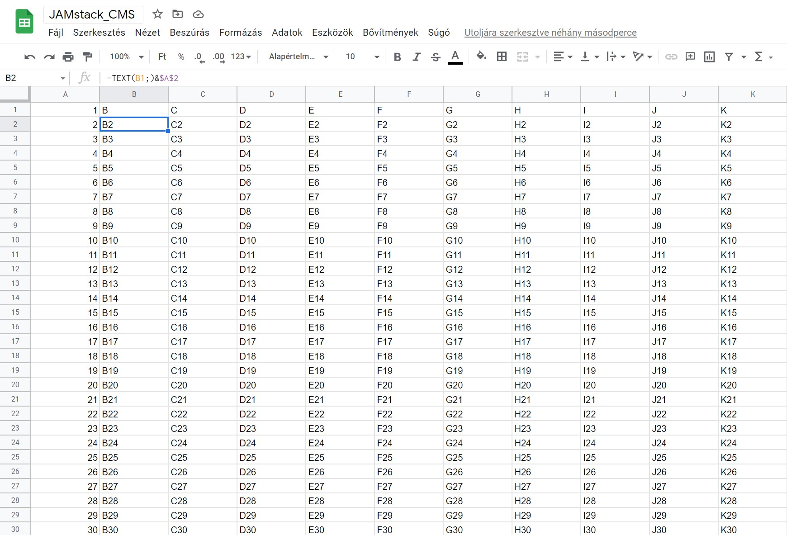

Google sheets data:
Documnet name: JAMstack_CMS
Sheet: Munkalap1
Total rows: 1000
Contents of the "B2" cell: B2
Link to the SheetTry to modify the cell "B2" in the link above, it will automatically redeploy and show the contents @ Contents of the "B2" cell:"
